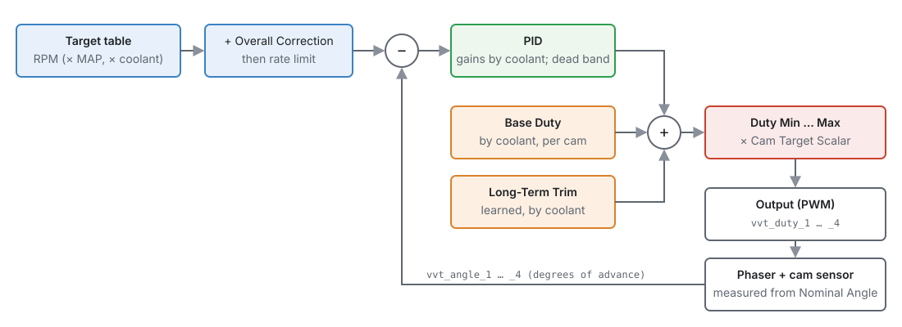
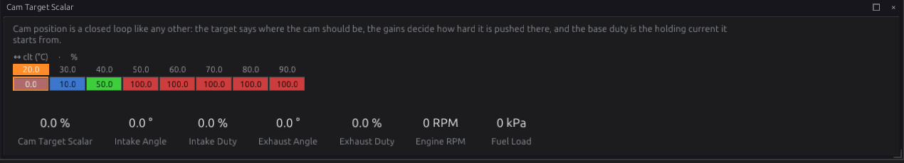
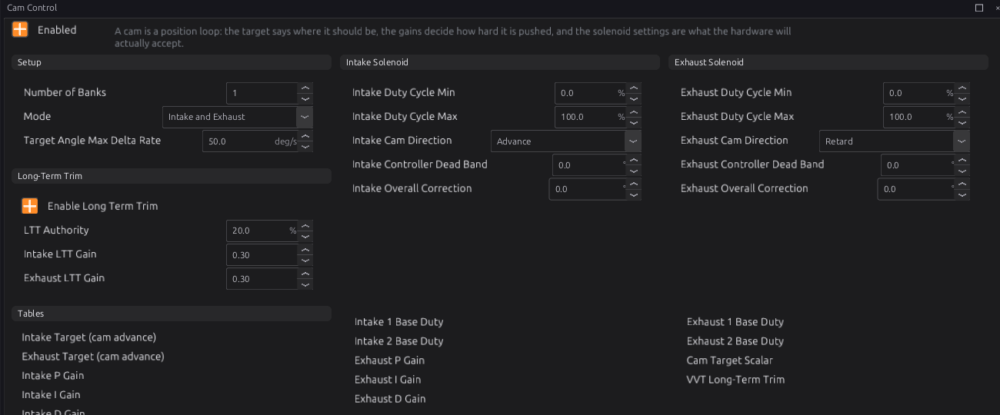
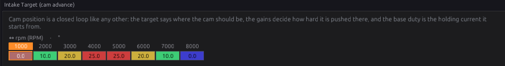
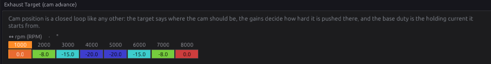
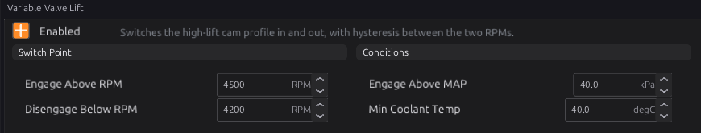

Cam and valve control¶
Intermediate → Advanced
In one sentence: cam control moves each camshaft on its phaser to the angle a table asks for, measuring where it really is from the cam sensor, and valve-lift control switches a two-stage cam (VTEC-style) to its high-lift profile at high engine speed.
What it does¶
Basic
Two modules:
- Cam Control (
vvt_control) — variable cam timing. A phaser on the end of a camshaft, worked by engine oil through a solenoid valve, turns the cam relative to its sprocket. Cam Control runs a position loop for each phased cam: up to four (intake and exhaust, on one or two banks). It publishes a PWM duty for each solenoid,vvt_duty_1…vvt_duty_4. - Variable Valve Lift (
vvl) — a solenoid that switches the engine to a second, high-lift cam profile above an engine speed. It publishes VVL Activevvl_active.
Neither drives a pin itself. You give an output the duty or the flag (chapter 18).
| Loop | Cam | Measured angle | Duty |
|---|---|---|---|
| 1 | Intake, bank 1 | vvt_angle_1 |
vvt_duty_1 |
| 2 | Exhaust, bank 1 | vvt_angle_2 |
vvt_duty_2 |
| 3 | Intake, bank 2 | vvt_angle_3 |
vvt_duty_3 |
| 4 | Exhaust, bank 2 | vvt_angle_4 |
vvt_duty_4 |

How it works¶
Intermediate
1 · Measuring the cam¶
Each phased cam has its own trigger stream (chapter 16: Cam Intake B1, Cam Exhaust B1, Cam Intake B2, Cam Exhaust B2). Each time the cam's reference edge arrives, the ECU compares where the crank is with where that edge sits when the phaser is parked — the stream's Nominal Angle. The difference is the cam angle, in crank degrees of advance:
- 0 — the cam is where it parks.
- Positive — the cam is advanced (its events happen earlier).
- Negative — the cam is retarded.
A typical intake phaser parks fully retarded and moves to positive angles. A typical exhaust phaser parks fully advanced and moves to negative angles.
The angle is only valid while that cam's stream is locked to the crank. Before the engine syncs, or if the cam signal is lost, it is not valid, and the loop does not use it (section 4).
2 · The target¶
For each cam type:
- Intake Target or Exhaust Target: degrees of advance by engine speed. The table can also have a manifold pressure axis and a coolant axis; switch them on from the table's Axis Setup. The exhaust target is signed: −20 means 20° retarded from home.
- Plus Overall Correction — a fixed number of degrees added everywhere.
- The result moves no faster than Target Angle Max Delta Rate (default 50 °/s), so a step in the table becomes a ramp. 0 means no limit.
3 · The duty¶
The solenoid duty is the sum of three parts:
- Base Duty — roughly the duty that holds the cam still, by coolant temperature (and optionally engine speed). There is one table per cam: Intake 1, Intake 2, Exhaust 1, Exhaust 2 (1 and 2 are the banks).
- Long-Term Trim — a learned correction to the base duty (section 5).
- PID — a correction from the error between the target and the measured angle. Its three gains are tables by coolant temperature, because cold, thick oil moves the phaser much more slowly. Inside Controller Dead Band the error counts as zero, to stop the loop hunting.
The sum is kept between Duty Cycle Min and Duty Cycle Max. Cam Direction says which way more duty moves the cam: Advance for most intake phasers, Retard for most exhaust phasers (the default for exhaust).
Finally, the duty is multiplied by the Cam Target Scalar, a curve by coolant temperature. By default it gives no duty below 20 °C and full duty from 50 °C, so the phaser is left parked while the oil is cold. While the scalar is below 100 %, the PID's integral part is held, so it does not wind up and then overshoot when the engine warms.

4 · Safety¶
- No cam angle, no closed loop. Without a valid measured angle, the cam gets its base duty (plus long-term trim) and nothing else. The PID is held.
- Engine stopped. The loop resets. The output templates also switch the solenoid off below Stop Below RPM, so it is not held powered with the key on.
- Module off. All four duties are 0.
5 · Long-term trim¶
With Enable Long Term Trim on, each cam learns the duty it needs to hold its target, per coolant temperature. When the cam is within 3° of its target and the loop is running at full authority, a little of the PID's integral part moves into the learned table each second (Intake LTT Gain and Exhaust LTT Gain, default 0.30). Each learned cell is limited to ± LTT Authority (default 20 %). The learned values are saved to the SD card with the fuel trims (chapter 23), so a warm engine starts from what it learned last time. The table is on the VVT Long-Term Trim page.
6 · Variable valve lift¶
Variable Valve Lift turns VVL Active on when all of these are true:
- engine speed at least Engage Above RPM (default 4500);
- manifold pressure at least Engage Above MAP (default 40 kPa, absolute);
- coolant at least Min Coolant Temp (default 40 °C).
It turns off again when the speed falls below Disengage Below RPM (default 4200), the load falls below Engage Above MAP, or the coolant falls below Min Coolant Temp. The gap between the two speeds stops the solenoid switching back and forth at the changeover point.
Before you start¶
Basic
- The cam sensors set up and working (chapter 16), each phased cam on its own stream, with Cam Is Phased ticked and Phaser Authority set to the phaser's real travel.
- Nominal Angle measured with the phaser parked: with the engine idling cold (so the phaser stays home), read where the cam edge falls and enter it. Check that the cam's VVT Cam Advance reads close to 0 there.
- The solenoids wired to low-side outputs with PWM (chapter 12). Oil-control solenoids are inductive; see chapter 12 for how the low-side outputs deal with that.
- The maker's figure for the solenoid's PWM frequency, if you have it.
Setting it up¶
Intermediate
Step 1 — The outputs¶
For each phased cam, pick a free low-side output (chapter 18), press Set up this output…, and choose the
matching template: VVT Solenoid (Intake Bank 1), (Exhaust Bank 1), (Intake Bank 2) or
(Exhaust Bank 2). Each sets the output to PWM at 250 Hz, fed by that cam's vvt_duty_N, and on
only while the engine runs. 250 Hz is a starting point; set the frequency on the output's
Frequency page to what the solenoid's maker gives.
Step 2 — Cam Control¶
Open Configuration ▸ Engine Functions ▸ Cam Control and tick Enabled.

- Number of Banks: 1, or 2 for a V engine with phasers on both banks.
- Mode: Intake, Exhaust, or Intake and Exhaust — only the cams that have phasers.
- Cam Direction for each: move the cam with a small base duty on the bench or at idle and watch the angle. If more duty makes the angle go up, choose Advance; if down, Retard.
- Leave the duty limits at 0–100 % unless the solenoid maker says otherwise.
Step 3 — Base duty¶
With the targets still at their parked value (0), find the duty that holds each cam still at operating temperature: raise Base Duty until the cam just starts to move off its stop, and use a little less. This is the most important number on the page: a good base duty means the PID only trims.
Step 4 — Targets¶
Fill in Intake Target and Exhaust Target. Start with small values and check the cam follows:
VVT Cam Advance should reach the target and hold it. Watch vvt_angle_N against the target and
vvt_duty_N in a log.


Step 5 — Gains and learning¶
Adjust the P, I and D gain tables at the temperatures you run (section Tuning it). When the cams hold their targets well, tick Enable Long Term Trim.
Worked examples¶
Intermediate
Example 1 — intake-only VVT, four cylinders
- Trigger: crank wheel on Crank Primary, intake cam on Cam Intake B1 with Cam Is Phased and Phaser Authority 50°.
- Output: VVT Solenoid (Intake Bank 1) on a free low-side pin.
- Cam Control: Enabled, 1 bank, Mode Intake, Direction Advance.
- Intake Target: 0° at idle, rising to 25° in the mid-range and back to 0° at high RPM.
Example 2 — dual VVT, V8
- Four cam streams, all phased. Four outputs from the four VVT templates.
- Cam Control: 2 banks, Mode Intake and Exhaust; Intake Direction Advance, Exhaust Direction Retard.
- Both banks share the target and gain tables; each has its own base duty (Intake 1 / Intake 2, Exhaust 1 / Exhaust 2), because each phaser sees its own oil supply.
Example 3 — VTEC-style lift change
- Variable Valve Lift: Enabled, Engage Above 5000 RPM, Disengage Below 4700 RPM, Engage Above MAP 60 kPa, Min Coolant Temp 60 °C.
- An output (chapter 18): Generic, Digital, Turn On When
vvl_active > 0.

Tuning it¶
Advanced
- Base duty first. If the cam drifts off target as soon as the PID is set to zero, the base duty is wrong. Long-term trim will find it in time, but a good starting value makes the loop settle faster.
- P makes the cam move towards the target. Raise it until the cam overshoots slightly, then back off.
- I removes the last steady error. Too much, and the cam slowly swings about the target.
- D damps the approach. A little helps a phaser that overshoots; too much makes the duty noisy.
- Rate limit. Lower Target Angle Max Delta Rate if the cam overshoots on big target steps.
- Hunting at target: set a small Controller Dead Band (0.5–1°).
Channels to log: vvt_angle_1 … _4, vvt_duty_1 … _4, vvt_ltt_1 … _4, rpm, map, clt,
and for VVL vvl_active.
Diagnostics¶
Intermediate
Cam Control and Variable Valve Lift set no codes of their own. A cam that is not where the crank expects — outside its Phaser Authority — sets P0341 (trigger phase lost), described in chapter 16. A cam signal that stops sets the trigger codes in chapter 16 too, and the cam angle stops being valid.
Troubleshooting¶
Basic → Advanced
| Symptom | Likely causes | Check |
|---|---|---|
| Duty stays 0 | Cam Control off; that cam not in Mode or bank count; coolant below the scalar's range | Enabled, Mode, Number of Banks; Cam Target Scalar |
| Duty moves but the cam does not | Output not set up; solenoid not wired; oil pressure too low | The output (chapter 18); the solenoid; oil |
| Cam runs to one end and stays there | Cam Direction wrong | Swap Advance/Retard |
| Cam angle reads far from 0 when parked | Nominal Angle wrong | Re-measure Nominal Angle with the phaser parked |
| Angle not valid | Cam stream not locked; engine not synced | Chapter 16: the cam stream and sync |
| Cam hunts around target | P or I too high; no dead band | Lower the gains; a small dead band |
| Slow to reach target when cold | Cold oil; scalar holding it back | Cam Target Scalar, the cold gain cells |
| P0341 at full phaser travel | Phaser Authority smaller than the real travel | Phaser Authority (chapter 16) |
| VVL never engages | Load or coolant below its condition; RPM never reaches Engage Above | map, clt; Engage Above MAP is absolute pressure |
| VVL flickers at the changeover | Too little gap between the two RPMs | Widen Engage/Disengage |
Settings reference¶
Cam Control:
| Setting | What it does |
|---|---|
VVT Control Enabledvvt_control.enabledRange: Off or On Default: Off |
Close a position loop on each camshaft and drive its phaser solenoid. Off, nothing is published for the VVT duties and the cams sit wherever their springs park them, which is the safe mechanical default. |
Number of Banksvvt_control.num_banksRange: 1 to 2 Default: 1 |
How many cylinder banks have phasers. One per bank means a V engine runs two independent loops per cam type — they share the tables and gains but not their integrators, because the two banks genuinely do not track each other. |
Modevvt_control.modeRange: one of: Intake, Exhaust, Intake and Exhaust Default: Intake and Exhaust |
Which camshafts are controlled: intake only, exhaust only, or both. It decides which loops run at all, so setting it wider than the hardware means driving solenoids that are not there; setting it narrower leaves a fitted phaser uncontrolled. |
Target Angle Max Delta Ratevvt_control.max_delta_rateRange: 0.0 to 2000.0 Default: 50.0 Units: deg/s |
Slew limit on the commanded cam target (0 = no limit). |
Intake Duty Cycle Minvvt_control.intake_duty_minRange: 0.0 to 100.0 Default: 0.0 Units: % |
Lowest duty the intake solenoid may be commanded. It is also the bottom of the final clamp, so the whole loop — base duty, learned trim and PID together — cannot go below it. A phaser that must never be fully unpowered is held above its floor here. |
Intake Duty Cycle Maxvvt_control.intake_duty_maxRange: 0.0 to 100.0 Default: 100.0 Units: % |
Highest duty for the intake solenoid, and also the bound on the PID's authority either way. It is the mechanical ceiling: no combination of base duty, trim and integral can exceed it, so a wound-up loop cannot hold the solenoid at full power. |
Intake Cam Directionvvt_control.intake_directionRange: one of: Advance, Retard Default: Advance |
Which way more duty moves the cam — flips the control-loop sign. |
Intake Controller Dead Bandvvt_control.intake_dead_bandRange: 0.0 to 10.0 Default: 0.0 Units: deg |
No correction while |target − measured| is within this band (anti-hunt). |
Intake Overall Correctionvvt_control.intake_overall_corrRange: -60.0 to 60.0 Default: 0.0 Units: deg |
Fixed degrees added to the intake target. |
Exhaust Duty Cycle Minvvt_control.exhaust_duty_minRange: 0.0 to 100.0 Default: 0.0 Units: % |
Lowest duty for the exhaust solenoid — see the intake equivalent. Exhaust phasers frequently need a different floor from intake ones because they work against different oil pressure and spring loads. |
Exhaust Duty Cycle Maxvvt_control.exhaust_duty_maxRange: 0.0 to 100.0 Default: 100.0 Units: % |
Highest duty for the exhaust solenoid, and the bound on its PID authority. |
Exhaust Cam Directionvvt_control.exhaust_directionRange: one of: Advance, Retard Default: Retard |
Which way more duty moves the cam — flips the control-loop sign. Retard by default: a typical exhaust phaser parks fully advanced and duty moves it later. |
Exhaust Controller Dead Bandvvt_control.exhaust_dead_bandRange: 0.0 to 10.0 Default: 0.0 Units: deg |
No correction while |target − measured| is within this band (anti-hunt). |
Exhaust Overall Correctionvvt_control.exhaust_overall_corrRange: -60.0 to 60.0 Default: 0.0 Units: deg |
Fixed degrees added to the exhaust target. |
Enable Long Term Trimvvt_control.enable_lttRange: Off or On Default: Off |
Learn the duty each cam needs to HOLD its target, so the feed-forward improves over time and the PID integral can recentre. It only learns while the cam is settled close to target, and what it learns is persisted across power cycles — so a warmed-up engine starts from what it learned last time instead of relearning every trip. |
LTT Authorityvvt_control.ltt_authority_pctRange: 0.0 to 100.0 Default: 20.0 Units: % |
Max learned duty correction per cam per cell. |
Intake LTT Gainvvt_control.intake_ltt_gainRange: 0.00 to 100.00 Default: 0.30 |
Learn rate: fraction of the PI hold-trim migrated into the learned table per second. |
Exhaust LTT Gainvvt_control.exhaust_ltt_gainRange: 0.00 to 100.00 Default: 0.30 |
How quickly the exhaust long-term trim absorbs the PID's holding integral. Low means it converges slowly and is barely moved by a bad moment; high follows quickly and follows mistakes just as quickly. Only what the authority clamp accepts is taken out of the integral, so the total correction is preserved either way. |
Intake Target (cam advance) X Channelvvt_control.intake_target_table_x_srcRange: -1 to 32767 Default: 319 |
WHICH SIGNAL the X axis of 'Intake Target (cam advance)' is looked up on. The axis holds the breakpoints; this says what is compared against them, so changing it re-points the table at a different quantity without moving a single cell — and the breakpoints, chosen for the old signal's range and units, will almost certainly need redrawing. |
Intake Target (cam advance) Y Channelvvt_control.intake_target_table_y_srcRange: -1 to 32767 Default: 273 |
WHICH SIGNAL the Y axis of 'Intake Target (cam advance)' is looked up on. The axis holds the breakpoints; this says what is compared against them, so changing it re-points the table at a different quantity without moving a single cell — and the breakpoints, chosen for the old signal's range and units, will almost certainly need redrawing. |
Intake Target (cam advance) Y Axis Enabledvvt_control.intake_target_table_y_enRange: Off or On Default: Off |
Use the Y axis of 'Intake Target (cam advance)' as a real dimension. Off, the table collapses to a curve on its remaining axes and this one is ignored entirely — the right default for most optional axes, since a dimension nobody calibrates is a set of duplicate rows that still has to be kept in step. |
Intake Target (cam advance) Z Channelvvt_control.intake_target_table_z_srcRange: -1 to 32767 Default: 61 |
WHICH SIGNAL the Z axis of 'Intake Target (cam advance)' is looked up on. The axis holds the breakpoints; this says what is compared against them, so changing it re-points the table at a different quantity without moving a single cell — and the breakpoints, chosen for the old signal's range and units, will almost certainly need redrawing. |
Intake Target (cam advance) Z Axis Enabledvvt_control.intake_target_table_z_enRange: Off or On Default: Off |
Use the Z axis of 'Intake Target (cam advance)' as a real dimension. Off, the table collapses to a curve on its remaining axes and this one is ignored entirely — the right default for most optional axes, since a dimension nobody calibrates is a set of duplicate rows that still has to be kept in step. |
Exhaust Target (cam advance) X Channelvvt_control.exhaust_target_table_x_srcRange: -1 to 32767 Default: 319 |
WHICH SIGNAL the X axis of 'Exhaust Target (cam advance)' is looked up on. The axis holds the breakpoints; this says what is compared against them, so changing it re-points the table at a different quantity without moving a single cell — and the breakpoints, chosen for the old signal's range and units, will almost certainly need redrawing. |
Exhaust Target (cam advance) Y Channelvvt_control.exhaust_target_table_y_srcRange: -1 to 32767 Default: 273 |
WHICH SIGNAL the Y axis of 'Exhaust Target (cam advance)' is looked up on. The axis holds the breakpoints; this says what is compared against them, so changing it re-points the table at a different quantity without moving a single cell — and the breakpoints, chosen for the old signal's range and units, will almost certainly need redrawing. |
Exhaust Target (cam advance) Y Axis Enabledvvt_control.exhaust_target_table_y_enRange: Off or On Default: Off |
Use the Y axis of 'Exhaust Target (cam advance)' as a real dimension. Off, the table collapses to a curve on its remaining axes and this one is ignored entirely — the right default for most optional axes, since a dimension nobody calibrates is a set of duplicate rows that still has to be kept in step. |
Exhaust Target (cam advance) Z Channelvvt_control.exhaust_target_table_z_srcRange: -1 to 32767 Default: 61 |
WHICH SIGNAL the Z axis of 'Exhaust Target (cam advance)' is looked up on. The axis holds the breakpoints; this says what is compared against them, so changing it re-points the table at a different quantity without moving a single cell — and the breakpoints, chosen for the old signal's range and units, will almost certainly need redrawing. |
Exhaust Target (cam advance) Z Axis Enabledvvt_control.exhaust_target_table_z_enRange: Off or On Default: Off |
Use the Z axis of 'Exhaust Target (cam advance)' as a real dimension. Off, the table collapses to a curve on its remaining axes and this one is ignored entirely — the right default for most optional axes, since a dimension nobody calibrates is a set of duplicate rows that still has to be kept in step. |
Intake P Gain X Channelvvt_control.intake_p_gain_x_srcRange: -1 to 32767 Default: 61 |
WHICH SIGNAL the X axis of 'Intake P Gain' is looked up on. The axis holds the breakpoints; this says what is compared against them, so changing it re-points the table at a different quantity without moving a single cell — and the breakpoints, chosen for the old signal's range and units, will almost certainly need redrawing. |
Intake P Gain Y Channelvvt_control.intake_p_gain_y_srcRange: -1 to 32767 Default: 319 |
WHICH SIGNAL the Y axis of 'Intake P Gain' is looked up on. The axis holds the breakpoints; this says what is compared against them, so changing it re-points the table at a different quantity without moving a single cell — and the breakpoints, chosen for the old signal's range and units, will almost certainly need redrawing. |
Intake P Gain Y Axis Enabledvvt_control.intake_p_gain_y_enRange: Off or On Default: Off |
Use the Y axis of 'Intake P Gain' as a real dimension. Off, the table collapses to a curve on its remaining axes and this one is ignored entirely — the right default for most optional axes, since a dimension nobody calibrates is a set of duplicate rows that still has to be kept in step. |
Intake I Gain X Channelvvt_control.intake_i_gain_x_srcRange: -1 to 32767 Default: 61 |
WHICH SIGNAL the X axis of 'Intake I Gain' is looked up on. The axis holds the breakpoints; this says what is compared against them, so changing it re-points the table at a different quantity without moving a single cell — and the breakpoints, chosen for the old signal's range and units, will almost certainly need redrawing. |
Intake I Gain Y Channelvvt_control.intake_i_gain_y_srcRange: -1 to 32767 Default: 319 |
WHICH SIGNAL the Y axis of 'Intake I Gain' is looked up on. The axis holds the breakpoints; this says what is compared against them, so changing it re-points the table at a different quantity without moving a single cell — and the breakpoints, chosen for the old signal's range and units, will almost certainly need redrawing. |
Intake I Gain Y Axis Enabledvvt_control.intake_i_gain_y_enRange: Off or On Default: Off |
Use the Y axis of 'Intake I Gain' as a real dimension. Off, the table collapses to a curve on its remaining axes and this one is ignored entirely — the right default for most optional axes, since a dimension nobody calibrates is a set of duplicate rows that still has to be kept in step. |
Intake D Gain X Channelvvt_control.intake_d_gain_x_srcRange: -1 to 32767 Default: 61 |
WHICH SIGNAL the X axis of 'Intake D Gain' is looked up on. The axis holds the breakpoints; this says what is compared against them, so changing it re-points the table at a different quantity without moving a single cell — and the breakpoints, chosen for the old signal's range and units, will almost certainly need redrawing. |
Intake D Gain Y Channelvvt_control.intake_d_gain_y_srcRange: -1 to 32767 Default: 319 |
WHICH SIGNAL the Y axis of 'Intake D Gain' is looked up on. The axis holds the breakpoints; this says what is compared against them, so changing it re-points the table at a different quantity without moving a single cell — and the breakpoints, chosen for the old signal's range and units, will almost certainly need redrawing. |
Intake D Gain Y Axis Enabledvvt_control.intake_d_gain_y_enRange: Off or On Default: Off |
Use the Y axis of 'Intake D Gain' as a real dimension. Off, the table collapses to a curve on its remaining axes and this one is ignored entirely — the right default for most optional axes, since a dimension nobody calibrates is a set of duplicate rows that still has to be kept in step. |
Intake 1 Base Duty X Channelvvt_control.intake_base_duty_1_x_srcRange: -1 to 32767 Default: 61 |
WHICH SIGNAL the X axis of 'Intake 1 Base Duty' is looked up on. The axis holds the breakpoints; this says what is compared against them, so changing it re-points the table at a different quantity without moving a single cell — and the breakpoints, chosen for the old signal's range and units, will almost certainly need redrawing. |
Intake 1 Base Duty Y Channelvvt_control.intake_base_duty_1_y_srcRange: -1 to 32767 Default: 319 |
WHICH SIGNAL the Y axis of 'Intake 1 Base Duty' is looked up on. The axis holds the breakpoints; this says what is compared against them, so changing it re-points the table at a different quantity without moving a single cell — and the breakpoints, chosen for the old signal's range and units, will almost certainly need redrawing. |
Intake 1 Base Duty Y Axis Enabledvvt_control.intake_base_duty_1_y_enRange: Off or On Default: Off |
Use the Y axis of 'Intake 1 Base Duty' as a real dimension. Off, the table collapses to a curve on its remaining axes and this one is ignored entirely — the right default for most optional axes, since a dimension nobody calibrates is a set of duplicate rows that still has to be kept in step. |
Intake 2 Base Duty X Channelvvt_control.intake_base_duty_2_x_srcRange: -1 to 32767 Default: 61 |
WHICH SIGNAL the X axis of 'Intake 2 Base Duty' is looked up on. The axis holds the breakpoints; this says what is compared against them, so changing it re-points the table at a different quantity without moving a single cell — and the breakpoints, chosen for the old signal's range and units, will almost certainly need redrawing. |
Intake 2 Base Duty Y Channelvvt_control.intake_base_duty_2_y_srcRange: -1 to 32767 Default: 319 |
WHICH SIGNAL the Y axis of 'Intake 2 Base Duty' is looked up on. The axis holds the breakpoints; this says what is compared against them, so changing it re-points the table at a different quantity without moving a single cell — and the breakpoints, chosen for the old signal's range and units, will almost certainly need redrawing. |
Intake 2 Base Duty Y Axis Enabledvvt_control.intake_base_duty_2_y_enRange: Off or On Default: Off |
Use the Y axis of 'Intake 2 Base Duty' as a real dimension. Off, the table collapses to a curve on its remaining axes and this one is ignored entirely — the right default for most optional axes, since a dimension nobody calibrates is a set of duplicate rows that still has to be kept in step. |
Exhaust P Gain X Channelvvt_control.exhaust_p_gain_x_srcRange: -1 to 32767 Default: 61 |
WHICH SIGNAL the X axis of 'Exhaust P Gain' is looked up on. The axis holds the breakpoints; this says what is compared against them, so changing it re-points the table at a different quantity without moving a single cell — and the breakpoints, chosen for the old signal's range and units, will almost certainly need redrawing. |
Exhaust P Gain Y Channelvvt_control.exhaust_p_gain_y_srcRange: -1 to 32767 Default: 319 |
WHICH SIGNAL the Y axis of 'Exhaust P Gain' is looked up on. The axis holds the breakpoints; this says what is compared against them, so changing it re-points the table at a different quantity without moving a single cell — and the breakpoints, chosen for the old signal's range and units, will almost certainly need redrawing. |
Exhaust P Gain Y Axis Enabledvvt_control.exhaust_p_gain_y_enRange: Off or On Default: Off |
Use the Y axis of 'Exhaust P Gain' as a real dimension. Off, the table collapses to a curve on its remaining axes and this one is ignored entirely — the right default for most optional axes, since a dimension nobody calibrates is a set of duplicate rows that still has to be kept in step. |
Exhaust I Gain X Channelvvt_control.exhaust_i_gain_x_srcRange: -1 to 32767 Default: 61 |
WHICH SIGNAL the X axis of 'Exhaust I Gain' is looked up on. The axis holds the breakpoints; this says what is compared against them, so changing it re-points the table at a different quantity without moving a single cell — and the breakpoints, chosen for the old signal's range and units, will almost certainly need redrawing. |
Exhaust I Gain Y Channelvvt_control.exhaust_i_gain_y_srcRange: -1 to 32767 Default: 319 |
WHICH SIGNAL the Y axis of 'Exhaust I Gain' is looked up on. The axis holds the breakpoints; this says what is compared against them, so changing it re-points the table at a different quantity without moving a single cell — and the breakpoints, chosen for the old signal's range and units, will almost certainly need redrawing. |
Exhaust I Gain Y Axis Enabledvvt_control.exhaust_i_gain_y_enRange: Off or On Default: Off |
Use the Y axis of 'Exhaust I Gain' as a real dimension. Off, the table collapses to a curve on its remaining axes and this one is ignored entirely — the right default for most optional axes, since a dimension nobody calibrates is a set of duplicate rows that still has to be kept in step. |
Exhaust D Gain X Channelvvt_control.exhaust_d_gain_x_srcRange: -1 to 32767 Default: 61 |
WHICH SIGNAL the X axis of 'Exhaust D Gain' is looked up on. The axis holds the breakpoints; this says what is compared against them, so changing it re-points the table at a different quantity without moving a single cell — and the breakpoints, chosen for the old signal's range and units, will almost certainly need redrawing. |
Exhaust D Gain Y Channelvvt_control.exhaust_d_gain_y_srcRange: -1 to 32767 Default: 319 |
WHICH SIGNAL the Y axis of 'Exhaust D Gain' is looked up on. The axis holds the breakpoints; this says what is compared against them, so changing it re-points the table at a different quantity without moving a single cell — and the breakpoints, chosen for the old signal's range and units, will almost certainly need redrawing. |
Exhaust D Gain Y Axis Enabledvvt_control.exhaust_d_gain_y_enRange: Off or On Default: Off |
Use the Y axis of 'Exhaust D Gain' as a real dimension. Off, the table collapses to a curve on its remaining axes and this one is ignored entirely — the right default for most optional axes, since a dimension nobody calibrates is a set of duplicate rows that still has to be kept in step. |
Exhaust 1 Base Duty X Channelvvt_control.exhaust_base_duty_1_x_srcRange: -1 to 32767 Default: 61 |
WHICH SIGNAL the X axis of 'Exhaust 1 Base Duty' is looked up on. The axis holds the breakpoints; this says what is compared against them, so changing it re-points the table at a different quantity without moving a single cell — and the breakpoints, chosen for the old signal's range and units, will almost certainly need redrawing. |
Exhaust 1 Base Duty Y Channelvvt_control.exhaust_base_duty_1_y_srcRange: -1 to 32767 Default: 319 |
WHICH SIGNAL the Y axis of 'Exhaust 1 Base Duty' is looked up on. The axis holds the breakpoints; this says what is compared against them, so changing it re-points the table at a different quantity without moving a single cell — and the breakpoints, chosen for the old signal's range and units, will almost certainly need redrawing. |
Exhaust 1 Base Duty Y Axis Enabledvvt_control.exhaust_base_duty_1_y_enRange: Off or On Default: Off |
Use the Y axis of 'Exhaust 1 Base Duty' as a real dimension. Off, the table collapses to a curve on its remaining axes and this one is ignored entirely — the right default for most optional axes, since a dimension nobody calibrates is a set of duplicate rows that still has to be kept in step. |
Exhaust 2 Base Duty X Channelvvt_control.exhaust_base_duty_2_x_srcRange: -1 to 32767 Default: 61 |
WHICH SIGNAL the X axis of 'Exhaust 2 Base Duty' is looked up on. The axis holds the breakpoints; this says what is compared against them, so changing it re-points the table at a different quantity without moving a single cell — and the breakpoints, chosen for the old signal's range and units, will almost certainly need redrawing. |
Exhaust 2 Base Duty Y Channelvvt_control.exhaust_base_duty_2_y_srcRange: -1 to 32767 Default: 319 |
WHICH SIGNAL the Y axis of 'Exhaust 2 Base Duty' is looked up on. The axis holds the breakpoints; this says what is compared against them, so changing it re-points the table at a different quantity without moving a single cell — and the breakpoints, chosen for the old signal's range and units, will almost certainly need redrawing. |
Exhaust 2 Base Duty Y Axis Enabledvvt_control.exhaust_base_duty_2_y_enRange: Off or On Default: Off |
Use the Y axis of 'Exhaust 2 Base Duty' as a real dimension. Off, the table collapses to a curve on its remaining axes and this one is ignored entirely — the right default for most optional axes, since a dimension nobody calibrates is a set of duplicate rows that still has to be kept in step. |
Cam Target Scalar X Channelvvt_control.target_scalar_x_srcRange: -1 to 32767 Default: 61 |
WHICH SIGNAL the X axis of 'Cam Target Scalar' is looked up on. The axis holds the breakpoints; this says what is compared against them, so changing it re-points the table at a different quantity without moving a single cell — and the breakpoints, chosen for the old signal's range and units, will almost certainly need redrawing. |
Cam Target Scalar Y Channelvvt_control.target_scalar_y_srcRange: -1 to 32767 Default: 61 |
WHICH SIGNAL the Y axis of 'Cam Target Scalar' is looked up on. The axis holds the breakpoints; this says what is compared against them, so changing it re-points the table at a different quantity without moving a single cell — and the breakpoints, chosen for the old signal's range and units, will almost certainly need redrawing. |
Cam Target Scalar Y Axis Enabledvvt_control.target_scalar_y_enRange: Off or On Default: Off |
Use the Y axis of 'Cam Target Scalar' as a real dimension. Off, the table collapses to a curve on its remaining axes and this one is ignored entirely — the right default for most optional axes, since a dimension nobody calibrates is a set of duplicate rows that still has to be kept in step. |
VVT Long-Term Trim X Channelvvt_control.vvt_ltt_x_srcRange: -1 to 32767 Default: 61 |
WHICH SIGNAL the X axis of 'VVT Long-Term Trim' is looked up on. The axis holds the breakpoints; this says what is compared against them, so changing it re-points the table at a different quantity without moving a single cell — and the breakpoints, chosen for the old signal's range and units, will almost certainly need redrawing. |
VVT RPM Axis binsvvt_control.vvt_rpm_axis_nRange: 2 to 32 Default: 8 |
How many breakpoints of 'VVT RPM Axis' are LIVE, out of 32 allocated. Shrinking the axis does not delete the values past the end — they stay in the tune and reappear if it is grown again. Every table sharing this axis is resized with it. Fewer, well-placed breakpoints beat many evenly-spaced ones: resolution is only worth spending where the surface actually bends. |
VVT Load Axis (MAP) binsvvt_control.vvt_load_axis_nRange: 2 to 32 Default: 8 |
How many breakpoints of 'VVT Load Axis (MAP)' are LIVE, out of 32 allocated. Shrinking the axis does not delete the values past the end — they stay in the tune and reappear if it is grown again. Every table sharing this axis is resized with it. Fewer, well-placed breakpoints beat many evenly-spaced ones: resolution is only worth spending where the surface actually bends. |
VVT Coolant Axis binsvvt_control.vvt_clt_axis_nRange: 2 to 8 Default: 8 |
How many breakpoints of 'VVT Coolant Axis' are LIVE, out of 8 allocated. Shrinking the axis does not delete the values past the end — they stay in the tune and reappear if it is grown again. Every table sharing this axis is resized with it. Fewer, well-placed breakpoints beat many evenly-spaced ones: resolution is only worth spending where the surface actually bends. |
VVT Aux RPM Axis binsvvt_control.vvt_aux_rpm_axis_nRange: 2 to 8 Default: 8 |
How many breakpoints of 'VVT Aux RPM Axis' are LIVE, out of 8 allocated. Shrinking the axis does not delete the values past the end — they stay in the tune and reappear if it is grown again. Every table sharing this axis is resized with it. Fewer, well-placed breakpoints beat many evenly-spaced ones: resolution is only worth spending where the surface actually bends. |
Target Scalar Coolant Axis binsvvt_control.vvt_scalar_clt_axis_nRange: 2 to 8 Default: 8 |
How many breakpoints of 'Target Scalar Coolant Axis' are LIVE, out of 8 allocated. Shrinking the axis does not delete the values past the end — they stay in the tune and reappear if it is grown again. Every table sharing this axis is resized with it. Fewer, well-placed breakpoints beat many evenly-spaced ones: resolution is only worth spending where the surface actually bends. |
Target Scalar Y (reserved) binsvvt_control.vvt_scalar_yaxis_nRange: 1 to 1 Default: 1 |
How many breakpoints of 'Target Scalar Y (reserved)' are LIVE, out of 1 allocated. Shrinking the axis does not delete the values past the end — they stay in the tune and reappear if it is grown again. Every table sharing this axis is resized with it. Fewer, well-placed breakpoints beat many evenly-spaced ones: resolution is only worth spending where the surface actually bends. |
VVT Target Coolant Axis binsvvt_control.vvt_ct_axis_nRange: 2 to 2 Default: 2 |
How many breakpoints of 'VVT Target Coolant Axis' are LIVE, out of 2 allocated. Shrinking the axis does not delete the values past the end — they stay in the tune and reappear if it is grown again. Every table sharing this axis is resized with it. Fewer, well-placed breakpoints beat many evenly-spaced ones: resolution is only worth spending where the surface actually bends. |
VVT Long-Term Trim X Axis binsvvt_control.vvt_ltt_x_axis_nRange: 2 to 8 Default: 8 |
How many breakpoints of 'VVT Long-Term Trim X Axis' are LIVE, out of 8 allocated. Shrinking the axis does not delete the values past the end — they stay in the tune and reappear if it is grown again. Every table sharing this axis is resized with it. Fewer, well-placed breakpoints beat many evenly-spaced ones: resolution is only worth spending where the surface actually bends. |
VVT Long-Term Trim Y Axis binsvvt_control.vvt_ltt_y_axis_nRange: 2 to 4 Default: 4 |
How many breakpoints of 'VVT Long-Term Trim Y Axis' are LIVE, out of 4 allocated. Shrinking the axis does not delete the values past the end — they stay in the tune and reappear if it is grown again. Every table sharing this axis is resized with it. Fewer, well-placed breakpoints beat many evenly-spaced ones: resolution is only worth spending where the surface actually bends. |
Intake Target (cam advance)vvt_control.intake_target_tableRange: 0.0 to 60.0 Default: 8 × 8 table Units: deg |
Where the intake cam should be, in degrees of advance from its parked (fully retarded) position, at each operating point. This is the map that actually makes the power — everything else here exists to get the cam to this number and hold it. |
Exhaust Target (cam advance)vvt_control.exhaust_target_tableRange: -60.0 to 60.0 Default: 8 × 8 table Units: deg |
Where the exhaust cam should be, in degrees of ADVANCE from its parked position, at each operating point. Signed, because an exhaust phaser usually parks fully advanced and moves the other way: -20 is 20 degrees of retard from home. Exhaust phasing is mostly about internal EGR and scavenging rather than peak torque, so its map usually has a very different shape from the intake's. |
Intake P Gainvvt_control.intake_p_gainRange: 0.000 to 30.000 Default: 8 × 8 table Units: %/deg |
Intake proportional gain against coolant temperature: duty per degree of cam error. Scheduled on temperature because a phaser is driven by engine oil, and cold oil is a completely different actuator from hot oil — one set of gains cannot serve both. |
Intake I Gainvvt_control.intake_i_gainRange: 0.000 to 30.000 Default: 8 × 8 table Units: %/deg/s |
Intake integral gain versus coolant temperature: duty per degree of error per second. It supplies the holding duty the base table does not, and when long-term trim is on it is this integral that gets migrated into the learned table. |
Intake D Gainvvt_control.intake_d_gainRange: 0.000 to 30.000 Default: 8 × 8 table Units: %*s/deg |
Intake derivative gain versus coolant temperature: duty per degree-per-second. It damps the approach so the cam settles rather than overshooting past target and coming back. |
Intake 1 Base Dutyvvt_control.intake_base_duty_1Range: 0.0 to 100.0 Default: 8 × 8 table Units: % |
Bank 1 intake feed-forward: roughly the duty needed to hold the cam, before the loop corrects anything. A good base table means the PID only ever handles the difference, which is what keeps the cam steady instead of hunting. |
Intake 2 Base Dutyvvt_control.intake_base_duty_2Range: 0.0 to 100.0 Default: 8 × 8 table Units: % |
Bank 2 intake feed-forward. Separate from bank 1 because the two phasers see different oil galleries and wear differently — forcing them to share one number makes at least one of them work harder than it should. |
Exhaust P Gainvvt_control.exhaust_p_gainRange: 0.000 to 30.000 Default: 8 × 8 table Units: %/deg |
Exhaust proportional gain versus coolant temperature — see the intake equivalent. |
Exhaust I Gainvvt_control.exhaust_i_gainRange: 0.000 to 30.000 Default: 8 × 8 table Units: %/deg/s |
Exhaust integral gain versus coolant temperature. |
Exhaust D Gainvvt_control.exhaust_d_gainRange: 0.000 to 30.000 Default: 8 × 8 table Units: %*s/deg |
Exhaust derivative gain versus coolant temperature. |
Exhaust 1 Base Dutyvvt_control.exhaust_base_duty_1Range: 0.0 to 100.0 Default: 8 × 8 table Units: % |
Bank 1 exhaust feed-forward duty. |
Exhaust 2 Base Dutyvvt_control.exhaust_base_duty_2Range: 0.0 to 100.0 Default: 8 × 8 table Units: % |
Bank 2 exhaust feed-forward duty. |
Cam Target Scalarvvt_control.target_scalarRange: 0.0 to 100.0 Default: 8-point curve Units: % |
A final multiplier on the commanded duty, scheduled on coolant temperature — the warm-up ramp. Cold oil will not move a phaser cleanly however hard the solenoid is driven, so this scales the whole authority back until the engine is warm rather than letting the loop fight the oil and wind up. |
VVT RPM Axisvvt_control.vvt_rpm_axisRange: 0 to 0 Default: 8-point curve Units: RPM |
RPM breakpoints for the cam target tables. Worth concentrating where the cam timing changes fastest, which is usually the transition out of the low-speed region. |
VVT Load Axis (MAP)vvt_control.vvt_load_axisRange: 0 to 0 Default: 8-point curve Units: kPa |
Load (MAP) breakpoints for the cam target tables. Cam phasing is strongly load-dependent — the overlap that is right at part throttle is wrong at full — so this axis carries most of the map's shape. |
VVT Coolant Axisvvt_control.vvt_clt_axisRange: 0 to 0 Default: 8-point curve Units: degC |
Coolant breakpoints for the gain and base-duty tables. This is the axis that makes cold-oil behaviour tunable independently of hot. |
VVT Aux RPM Axisvvt_control.vvt_aux_rpm_axisRange: 0 to 0 Default: 8-point curve Units: RPM |
RPM breakpoints for the auxiliary VVT tables, kept separate so the feed-forward and the target maps do not have to share breakpoints. |
Target Scalar Coolant Axisvvt_control.vvt_scalar_clt_axisRange: 0 to 0 Default: 8-point curve Units: degC |
Coolant breakpoints for the target scalar — the warm-up ramp's X axis. Where these sit decides how quickly the phasers are given full authority as the engine warms. |
Target Scalar Y (reserved)vvt_control.vvt_scalar_yaxisRange: 0 to 0 Default: 1-point curve |
Reserved — the target scalar is a one-dimensional coolant curve and this second axis is not used. |
VVT Target Coolant Axisvvt_control.vvt_ct_axisRange: 0 to 0 Default: 2-point curve Units: degC |
Coolant breakpoints for the cam target tables, for engines whose target phasing should differ cold from hot. |
VVT Long-Term Trim X Axisvvt_control.vvt_ltt_x_axisRange: 0 to 0 Default: 8-point curve |
— |
VVT Long-Term Trim Y Axisvvt_control.vvt_ltt_y_axisRange: 0 to 0 Default: 4-point curve |
— |
VVT Long-Term Trimvvt_control.vvt_lttRange: -100.000 to 100.000 Default: 4 × 8 table Units: % |
Learned trim (runtime RAM, persisted to SD; not part of the tune). |
Variable Valve Lift:
| Setting | What it does |
|---|---|
VVL Enabledvvl.enabledRange: Off or On Default: Off |
Variable valve LIFT: a solenoid-switched high-lift cam profile, engaged by RPM with load and temperature as preconditions. The module only publishes vvl_active — the solenoid itself is driven by mapping a generic output to that signal, so the wiring is not fixed here. |
Engage Above RPMvvl.on_rpmRange: 0 to 12000 Default: 4500 Units: RPM |
Engage the high-lift profile at or above this RPM, provided the load and coolant preconditions also hold. Disengagement is a SEPARATE, lower RPM (Disengage Below): the gap between the two is what stops the solenoid chattering as the engine hunts across the crossover. |
Disengage Below RPMvvl.off_rpmRange: 0 to 12000 Default: 4200 Units: RPM |
Below on_rpm for hysteresis around the crossover. |
Engage Above MAPvvl.min_load_kpaRange: 0.0 to 600.0 Default: 40.0 Units: kPa |
Load floor (MAP) below which the high cam stays disengaged. |
Min Coolant Tempvvl.min_clt_cRange: -40.0 to 200.0 Default: 40.0 Units: degC |
Stay on the low cam until warm. |
Related¶
- Chapter 12 — Wiring outputs (solenoid outputs)
- Chapter 16 — Trigger setup (cam streams, Nominal Angle, Phaser Authority)
- Chapter 18 — Outputs and the pin system (templates, PWM frequency)
- Chapter 23 — Closed-loop lambda (learned trims and the SD card)